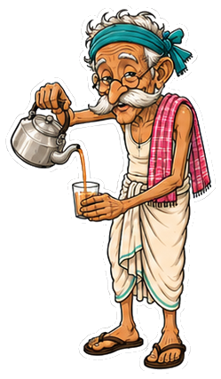

about.
I’m Diptanil — a creative technologist, Ph.D. computer scientist, robotics researcher, and software engineer based in Austin. I build software that I'd want to use myself, and I keep this site as a workshop for thinking out loud.
I like taking the impossible-looking parts of math and engineering and turning them into systems that are real enough to test, debug, use, and improve.
A short version
I have always been the kind of person who breaks things open to understand how they work, then tries to rebuild them into something stranger and more useful. Today that shows up as robotics, AI systems, embedded hardware, developer tools, and notes that admit uncertainty.
My favorite work starts as a vague idea and becomes a working prototype: a robot that needs to move through the real world, a model that needs to be evaluated honestly, a tool that helps engineers move faster, or a system that makes hidden assumptions easier to see.
At Silicon Labs, I work on engineering software that supports semiconductor design and validation workflows.
A few facts
now
What I'm doing this season:
Tools for engineers who like fast feedback loops, inspectable state, boring file formats, and workflows that do not require a ceremony to be useful.
Quantization, pruning, folding, benchmarks, and practical evaluation systems that treat accuracy as a starting point, not a personality.
Excited for my new MLAstro SHG 700.
Three small characters who keep watch over different corners of the workshop.
Munshi-cha
Old-school accountant. Keeps the ledgers for Chaat and gives unsolicited stock advice.

Ramu-kaka
Pours Chai. Says little. Has surprisingly good takes on consensus algorithms.
Jhingur
Resident bug-catcher. Lives in KeedaKhet, occasionally escapes into prod.